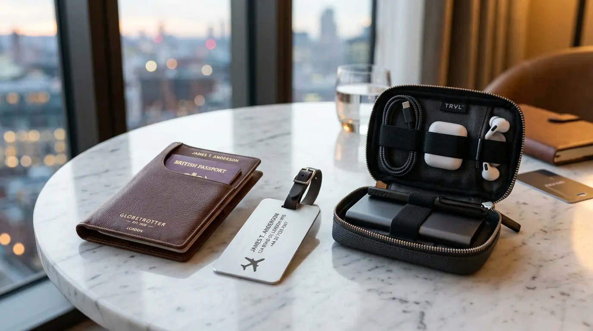

Souvenir Kantor Ramah Lingkungan Jadi Pilihan Perusahaan Modern
 Ardhana Prasasta (haw)
10 Agustus 2026
4 Menit Baca
Ardhana Prasasta (haw)
10 Agustus 2026
4 Menit Baca

Souvenir kantor ramah lingkungan adalah merchandise perusahaan yang dibuat dari material berkelanjutan, dapat didaur ulang, atau memiliki dampak lingkungan yang minim dibandingkan produk konvensional. Tren ini semakin diminati karena mencerminkan kepedulian perusahaan terhadap isu lingkungan sekaligus memperkuat citra positif di mata klien maupun karyawan. Pemilihan souvenir berbasis keberlanjutan kini menjadi bagian dari strategi komunikasi nilai perusahaan, bukan sekadar tren sesaat.
Souvenir kantor ramah lingkungan adalah merchandise perusahaan yang dibuat dari material berkelanjutan, dapat didaur ulang, atau memiliki dampak lingkungan yang minim dibandingkan produk konvensional. Tren ini semakin diminati karena mencerminkan kepedulian perusahaan terhadap isu lingkungan sekaligus memperkuat citra positif di mata klien maupun karyawan. Pemilihan souvenir berbasis keberlanjutan kini menjadi bagian dari strategi komunikasi nilai perusahaan, bukan sekadar tren sesaat.
Mengapa Tren Souvenir Ramah Lingkungan Semakin Berkembang
Kesadaran akan isu lingkungan yang semakin meningkat turut mendorong perubahan preferensi dalam pemilihan merchandise korporat. Perusahaan yang sebelumnya hanya mempertimbangkan estetika dan fungsi souvenir kini juga mulai memperhitungkan dampak lingkungan dari material yang digunakan. Pergeseran ini sejalan dengan meningkatnya ekspektasi publik terhadap tanggung jawab sosial dan lingkungan yang diemban oleh dunia usaha.

Selain faktor kesadaran lingkungan, souvenir ramah lingkungan juga dinilai mampu memperkuat positioning perusahaan sebagai entitas yang adaptif terhadap isu global. Klien maupun mitra bisnis cenderung memberikan penilaian lebih positif terhadap perusahaan yang secara konsisten menunjukkan komitmen keberlanjutan melalui tindakan nyata, termasuk dalam pemilihan merchandise.
Material yang Umum Digunakan pada Souvenir Berkelanjutan
Beberapa material populer yang digunakan dalam pembuatan souvenir ramah lingkungan antara lain bambu, kertas daur ulang, kain kanvas organik, hingga plastik hasil daur ulang.
Bambu
Banyak dipilih untuk produk seperti tumbler atau alat tulis karena sifatnya yang kuat, mudah dibentuk, dan berasal dari sumber yang dapat diperbarui dengan cepat.
Kertas Daur Ulang
Kerap digunakan untuk kemasan souvenir maupun produk seperti notebook, selain ramah lingkungan, teksturnya yang khas turut memberikan kesan alami dan autentik pada produk.
Kanvas Organik
Digunakan untuk totebag atau tas jinjing yang ramah lingkungan dan dapat digunakan berulang kali.
Plastik Daur Ulang
Material yang diolah kembali menjadi produk baru dengan kualitas yang tetap baik dan ramah lingkungan.
Pemilihan material semacam ini secara tidak langsung turut menyampaikan pesan bahwa perusahaan memperhatikan detail hingga ke aspek keberlanjutan produk yang dibagikan.
Dampak Souvenir Ramah Lingkungan terhadap Citra Perusahaan
Penggunaan souvenir ramah lingkungan tidak hanya berdampak pada isu keberlanjutan, tetapi juga pada bagaimana perusahaan dipersepsikan oleh klien dan karyawan. Souvenir semacam ini sering dianggap mencerminkan nilai perusahaan yang lebih modern, bertanggung jawab, dan berorientasi jangka panjang, bukan sekadar berorientasi pada keuntungan semata.
Di sisi internal, souvenir ramah lingkungan yang dibagikan kepada karyawan turut menumbuhkan rasa bangga karena bekerja di perusahaan yang memiliki kepedulian terhadap isu lingkungan. Hal ini secara tidak langsung dapat memperkuat loyalitas karyawan terhadap nilai dan visi perusahaan tempat mereka bekerja.
Menyeimbangkan Fungsi, Estetika, dan Keberlanjutan
Meski berfokus pada aspek lingkungan, souvenir ramah lingkungan tetap perlu mempertimbangkan fungsi dan estetika agar tidak kalah menarik dibandingkan souvenir konvensional. Desain yang rapi dan material berkualitas tetap menjadi faktor penting agar souvenir tersebut nyaman digunakan dan memiliki daya tarik visual yang baik.
Keseimbangan antara nilai keberlanjutan dan kualitas produk inilah yang membuat souvenir ramah lingkungan mampu bersaing dengan produk konvensional, sekaligus memberikan nilai tambah berupa pesan positif yang melekat pada setiap penggunaannya.
Butuh Souvenir Ramah Lingkungan untuk Perusahaan Anda?
Konsultasikan kebutuhan souvenir kantor ramah lingkungan dengan tim kami untuk mendapatkan rekomendasi produk berkelanjutan terbaik.
Konsultasi SekarangKesimpulan
Souvenir kantor ramah lingkungan bukan sekadar tren sesaat, melainkan bagian dari strategi branding yang mencerminkan kepedulian perusahaan terhadap masa depan planet ini. Dengan memilih material berkelanjutan, perusahaan tidak hanya memberikan hadiah yang bermanfaat bagi penerima, tetapi juga menyampaikan pesan kuat tentang nilai dan komitmen mereka terhadap keberlanjutan. Di tengah meningkatnya kesadaran global akan isu lingkungan, souvenir ramah lingkungan menjadi pilihan yang tepat untuk memperkuat citra perusahaan yang modern, bertanggung jawab, dan berwawasan jangka panjang.
Pertanyaan Seputar Souvenir Kantor Ramah Lingkungan